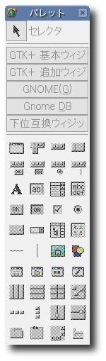
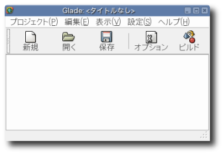
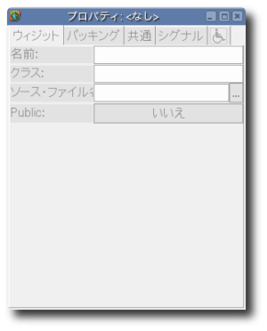
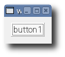

短時間で開発することを目的とした Glade# : Hello World
目次
- はじめに
- UI の生成
- コードの生成
- XML を実行形式に埋め込む
前の章では、コードのみの面倒なやり方で GUI (グラフィカル・ユーザ・インタフェース) の作成について学習しました。本章では、Glade GUI ビルダを使った方法について見ていくことにします。Glade を使うと視覚的にユーザ・インタフェースを組み立てることができ、コードの生成とユーザ・インタフェースの構築をきっちり分けることが可能になります。
Glade を使ったプログラミングは二つの部分からなります:
- UI (ユーザ・インタフェース) を構築して、その結果を XML ファイルへ保存してくれる、Glade 本体
- 実行時に XML を読み込んで UI を生成してくれる、libglade ライブラリ
'glade'、'libglade'、'gtk-sharp' といったパッケージをインストールしているなら、既に必要なものは揃っていることになります: 'gtk-sharp' には libglade 用の .NET ラッパーが含まれています。Glade と libglade は Python、C、C++、そしてもちろん C# といった色々なプログミング言語と一緒に利用することが可能になっています。その詳細については Glade 同梱のドキュメントを参照してみて下さい。
libglade を使ってアプリケーションを構築する場合、そのアプリケーションを実行するには libglade ライブラリがインストールされている必要があり、加えてアプリケーションと XML インタフェース・ファイルを一緒にしておかなければなりません。Gtk# を利用する場合は、その XML インタフェース・ファイルを実行形式の一部に埋め込むことが可能になっています。
|  |
まず最初に、Glade インタフェース・デザイナを起動して下さい (バージョン 2.0 以上かどうか確認しておいて下さい。通常はコマンド glade-2 で起動します)。すると、Glade は三つのウィンドウを開きます: メイン・ウィンドウ、プロパティ・ウィンドウ、そしてパレット・ウィンドウです。メイン・ウィンドウのツールバーにある新規ボタンをクリックすると、"生成するプロジェクトを選択して下さい:" という質問が表示されるので、GNOME プロジェクトを選択して下さい。
注記: Glade のバージョン 2.5 以上は GTK+ バージョン 2.4 を使用します。このバージョンでは、GTK+ バージョン 2.2 よりもより多くのウィジットをサポートしています。Mono 1.0 よりも前のバージョン、そして GNOME.NET (含む、gtk-sharp) では GTK+ バージョン 2.2 のウィジットだけサポートしています。インタフェースを設計するにはバージョン 2.0 以上の Glade を利用することは可能ですが、未サポートのウィジットを選択しないようにするためにバージョン 2.0 ? 2.5 がお奨めです。
ここで、パレット・ウィンドウから最初のウィジットである、'ウィンドウ' を選択して下さい。Glade のプロジェクトで最初に選択するアイテムはご想像のとおり、パレット・ウィンドウにある (ウィンドウ) ボタンです。このボタンをクリックすると、window1 という名前が付いた新しいウィンドウがオープンされます。このときプロパティ・ダイアログには、このオブジェクトのクラス、位置、タイトルといったウィンドウに関連する情報が表示されます。
次のステップはシグナルの追加です。先ほど生成したウィンドウにアクションを一つ持たせることにします。プロパティ・ダイアログで、シグナル のタブを選択して下さい。そして、シグナルを入力するエントリ "シグナル:" の横にある ボタンをクリックして、事前に定義されている利用可能なシグナルの一覧を表示させて下さい。その中から GtkWidget シグナルの一つである、"delete_event" を選択して下さい。デフォルトのハンドラ名 "on_window1_delete_event" はそのままにしておいて下さい。ウィンドウを閉じる際に、このシグナルを利用してアプリケーションを終了することが可能になります。
次に、ウィンドウにボタンを追加して下さい: パレット・ウィンドウにある  (ボタン) をクリックします。このウィンドウには他にインタフェースを何も配置していないので、ボタンはウィンドウで利用可能なスペース全体を埋め尽くす感じになります。 (ボタン) をクリックします。このウィンドウには他にインタフェースを何も配置していないので、ボタンはウィンドウで利用可能なスペース全体を埋め尽くす感じになります。
注記: Glade にはウィジットのカテゴリが四つあります: GTK+ 基本ウィジット、GTK+ 追加ウィジット、GNOME、そして下位互換ウィジットです。最初の二つは Windows や Macintosh OS X にも簡単に移植できます。もし Linux プラットフォームのみの開発ならば、GNOME カテゴリにあるインタフェースが有用でしょう。特に "ドルイド" または "アシスタント"、フォント選択ダイアログ、そしてアイコン・リストです。下位互換ウィジットらは、どうみても、推奨ではありません。
最初に生成したウィンドウ同様に、ボタンに何かさせるにはシグナルが必要です。プロパティ・ウィンドウで、シグナル のタブをクリックし、GtkButton ウィジットのシグナル "clicked" のハンドラを追加して下さい (ハンドラの名前はデフォルトの "on_button1_clicked" のままにしておいて下さい)。
ここで、こおプロジェクトに "button" という名前を付けて任意のディレクトリに保存して下さい。その際に、Glade は二つのファイルを生成します: 先ほど生成したウィンドウとボタンのインタフェースを記述した button.glade (Glade XML インタフェース・ファイル)、そして、作業には直接関係のない Glade プロジェクト・ファイルの button.gladepです。button.glade ファイルは次のようになっているはずです:
|


|
<?xml version="1.0" standalone="no"?> <!--*- mode: xml -*-->
<!DOCTYPE glade-interface SYSTEM "http://glade.gnome.org/glade-2.0.dtd">
<glade-interface>
<widget class="GtkWindow" id="window1">
<property name="visible">True</property>
<property name="title" translatable="yes">window1</property>
<property name="type">GTK_WINDOW_TOPLEVEL</property>
<property name="window_position">GTK_WIN_POS_NONE</property>
<property name="modal">False</property>
<property name="resizable">True</property>
<property name="destroy_with_parent">False</property>
<signal name="delete_event" handler="on_window1_delete_event" last_modification_time="Mon, 05 Apr 2004 13:31:33 GMT" />
<child>
<widget class="GtkButton" id="button1">
<property name="border_width">10</property>
<property name="visible">True</property>
<property name="can_focus">True</property>
<property name="label" translatable="yes">button1</property>
<property name="use_underline">True</property>
<property name="relief">GTK_RELIEF_NORMAL</property>
<signal name="clicked" handler="on_button1_clicked_event" last_modification_time="Mon, 05 Apr 2004 13:31:57 GMT" />
</widget>
</child>
</widget>
</glade-interface>
この例で使用することになるコードは前章で紹介したコードによく似ています。しかしながら、Main() メソッドを static にし、どのクラスにも属さないようにするために、その動作のほとんどは Main() メソッドから GladeTest() コンストラクタへ移動しました。コンストラクタ GladeTest() を使ってよりシンプルにそしてコードをきれいにまとめてみました。他に、このコードには特別な配慮を払うべき部分が三カ所ほどあります。
-
他の例のように、名前空間 (namespace) とアセンブリを最初に定義します。この例では、名前空間は "GladeSamples" で、アセンブリとして System、Gtk と Glade を使用します。ここで Glade を追加することにより、Glade# アセンブリを利用できるようになります。
-
次に、Application.Init() 関数の先頭から二行目までのコードに注目して下さい。これらの文により Glade XML インタフェース・ファイルをコードの中に組み込みます。最初の行で、Glade.XML オブジェクトのインスタンスを生成します。コンストラクタには Glade XML インタフェース・ファイル (button.glade) と第一のウィジットとして window1 を引き渡します。(三番目の引数は XML の翻訳ドメインです。とりあえず、ここではデフォルトの null を渡して無視することにします)。
Glade.XML gxml = new Glade.XML ("button.glade", "window1", null);
この行を追加することにより、アプリケーション側から 'gxml' というオブジェクトで先に生成しておいたユーザ・インタフェースにアクセスできるようになります。
そして、ユーザ・インタフェース・オブジェクトのメソッド Autoconnect() を呼び出します。
gxml.Autoconnect (this);
-
最後に、Glade ファイルの取り込みでは全てのオブジェクトをインポートするわけではない点に注意して下さい: それぞれ一つずつ実際にインポートしていく必要があります:
[Glade.Widget]
Button button1;
一度、Glade XML インタフェースをインポートすれば、このファイルの中で定義されていないようなプロパティやイベントをたくさん追加するといった、オブジェクトと相互にやりとりできるようになります。ここでは、実際にボタンの境界線の幅を 10ピクセルにセットしています:
button1.BorderWidth=10;
この例の完全なコードは次のとおりです:
namespace GladeSamples {
using System;
using Gtk;
using Glade;
public class GladeTest
{
public static void Main (string[] args)
{
new GladeTest(args);
}
/* 次の二行で、先に生成したシグナル・ハンドラを使って動作できるようにするために、
* Glade オブジェクトを "インポート" しています。
* この方法でオブジェクトをインポートしない場合は、
* 自分でシグナル・ハンドラのコードを記述する必要があります。*/
[Glade.Widget]
Button button1;
public GladeTest (string[] args)
{
Application.Init();
/* 次の行で (同じディレクトリにある) Glade XML ファイル
* button.glade を読み込み、window1 を選択して
* 現在のオブジェクトである GladeTest のインスタンスへ
* 接続しています */
Glade.XML gxml = new Glade.XML ("button.glade", "window1", null);
gxml.Autoconnect (this);
button1.BorderWidth=10;
Application.Run();
}
/* 次の二つのメソッドは、
* Glade UI デザイナで定義したシグナル・ハンドラの実装です */
public void on_window1_delete_event (object o, DeleteEventArgs args)
{
Application.Quit ();
args.RetVal = true;
}
public void on_button1_clicked (System.Object obj, EventArgs e)
{
Console.WriteLine ("Button 1 clicked");
}
}
}
このコードを GladeTest.cs という名前で保存し、コンパイルします:
mcs -unsafe -pkg:gtk-sharp,glade-sharp GladeTest.cs
そして、実行します:
mono GladeTest.exe
次の図のような結果になるはずです:

上のアプリケーションは単一の EXE ファイルですが、このアプリケーションを配布するために XML ファイル "button.glade" を追加してみます。幸運にも、このファイル button.glade を実行形式の中に直接埋め込むことも可能です。
これを行うには、オブジェクト gxml を生成する際に別のコンストラクタを用意することになります。このコンストラクタでは四つの引数を受け取り、一番目の引数は XML ファイルを格納することになる System.Reflection.Assembly です。
Glade.XML gxml = new Glade.XML (null, "button.glade", "window1", null);
gxml.Autoconnect (this);
これを null にすると、アプリケーション側が実際のファイルシステムの中からではなく、現在のアセンブリの中から XML ファイルを見つけるように強制的に指示することになります。それから、XML ファイルの "button.glade" を実行形式に埋め込むんでコンパイルするために、コンパイラのフラグ -resource を追加します。
mcs -unsafe -resource:button.glade -pkg:gtk-sharp,glade-sharp GladeTest.cs